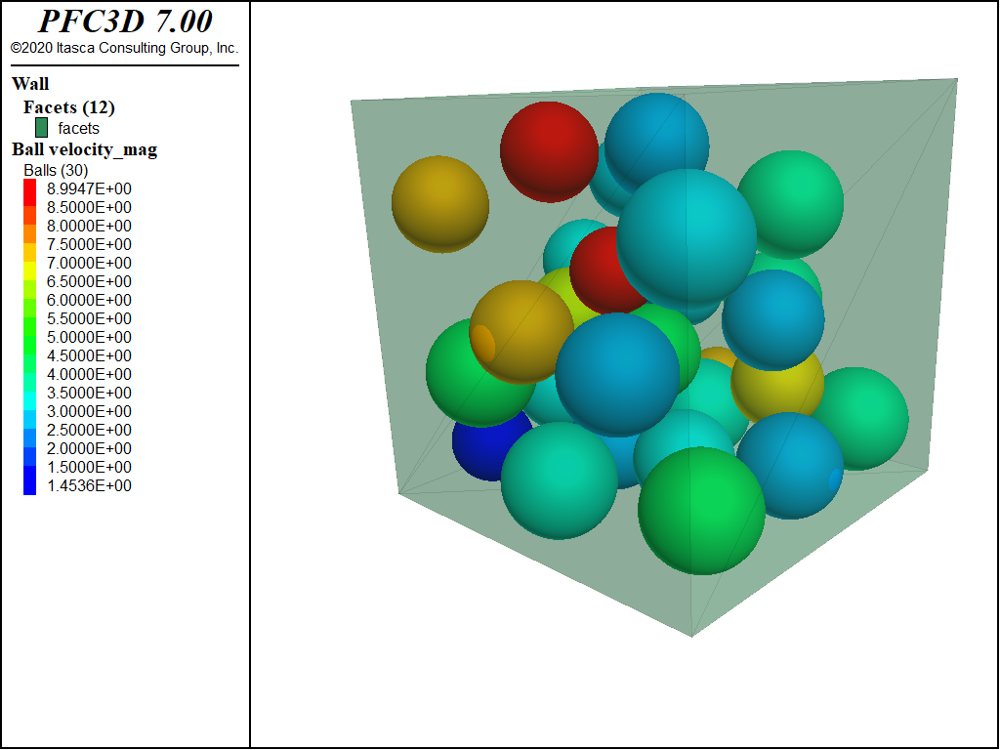
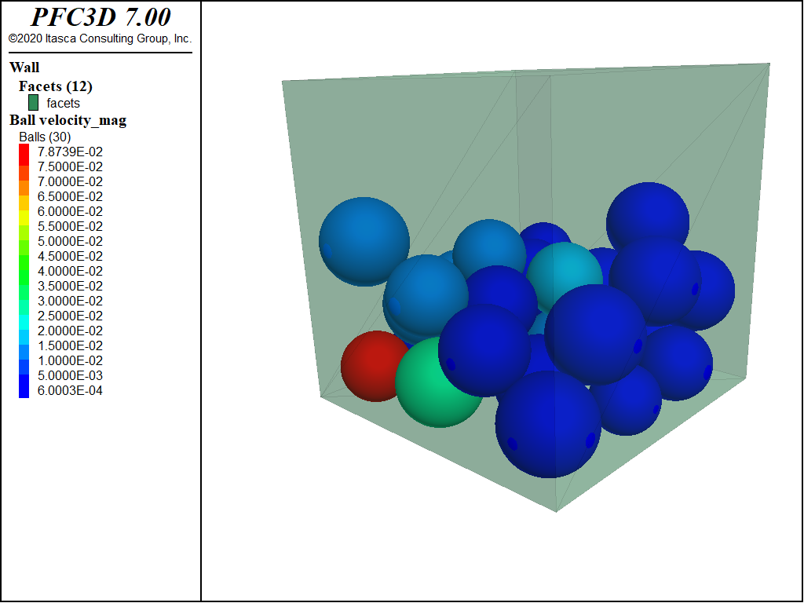

盒中的球颗粒
引言
注意
本算例的项目文件可在 PFC 中查看或运行。[1]所用的数据文件（data files）列于本算例末尾。
这个简单的示例模拟了 30 个球颗粒在盒中的相互作用。激活重力，并将系统循环至目标龄期上限两次：
- 一次不设能量耗散，
- 另一次通过接触处的摩擦滑移和黏性阻尼耗散能量。
本示例演示了 ball generate、ball attribute 和 contact cmat default 命令的基本用法，并使用了 线性接触模型（linear contact model）。关于在盒中创建刚性簇的类似教程见“盒中的刚性簇（Clumps in a Box）”一节。
数值模型
本示例的完整数据文件（3D）为“cmlinear_simple.dat（三维）（cmlinear_simple.dat (3D)）”。下文将讨论该文件中的部分代码行。由于 PFC3D 与 PFC2D 的命令结构完全相同，该数据文件在后者中同样可以运行（仅生成的球颗粒数目不同）。
文件的前三行——不计以分号（;）开头的行，这些行被视为注释，并在命令/FISH 处理过程中被忽略——分别调用 新建模型（model new） 命令、将模型设置为按大应变模式计算（见 大应变/小应变（Large Strain/Small Strain）），以及设置本项目的任务标题：
model new
model large-strain on
model title 'Balls in a box'
发出 新建模型（model new） 命令会清空整个模型，当你多次运行该文件或此前已执行过其他操作时非常有用。大应变或小应变计算模式可在循环计算之前的任意时刻设置。由于所有 PFC 模型都按大应变模式运行，开启大应变模式的命令通常位于模型的最开端或其附近。任务标题默认为空。请注意，也可在 菜单下的 常规选项对话框（General Options dialog） 中设置任务标题。
接下来，使用 设置模型域命令（model domain） 命令指定计算域的范围：
model domain extent -10.0 10.0
必须先定义计算域的范围，然后才能创建任何模型组件。PFC 利用该信息进行几何计算和接触检测（详情请参阅“域（Domain）”一节）。该命令将计算域的范围设置为一个边长为 20.0 个单位、以模型原点（始终位于 (0.0,0.0,0.0)）为中心的立方体盒子。这是通过仅指定 x 方向上的范围边界来实现的。若未指定 y 和/或 z 方向上的范围边界，则沿用前一方向的范围边界。另请注意，计算域条件（即当某个模型组件到达计算域边界时所施加的条件）可通过 设置模型域命令（model domain） 命令指定。默认情况下采用 stop 条件，此时平动速度和角速度均设置为 0。
接下来，使用 contact cmat default 命令选择 PFC 在每次创建新接触时默认安装的力学接触模型。此处选择的是 线性接触模型（linear contact model）。还可以使用 property 关键字指定接触模型属性。在本例中，指定的法向刚度为 1.0e6 个刚度单位。
contact cmat default model linear property kn 1.0e6
该命令作用于 接触模型分配表（CMAT）（Contact Model Assignment Table (CMAT)），这是 PFC 中新增的一个实用工具。接触检测在循环计算过程中进行，接触列表根据各部件（piece）相互之间的接近程度进行更新（循环次序的详细说明请参阅“循环计算（Cycling）”一节）。若各部件相互远离到不再发生相互作用，接触检测方案也会删除相应的接触。每当创建接触时，都会查询 CMAT 以选择要安装的合适接触模型。程序启动时，CMAT 针对每种接触类型（例如 ball-ball、ball-facet 等）都包含默认槽位，这些槽位由 空接触模型（Null contact model）填充。这意味着默认情况下物体之间不会发生相互作用，也不会相互“看见”。contact cmat default 命令用于修改这些默认槽位；若未指定接触类型，则修改所有默认槽位。请注意，CMAT 还可能包含其他条目（每个条目都与一个特定的范围相关联），从而可以方便地将复杂的力学行为构建到系统中。更多细节请参阅“contact cmat 命令（contact cmat commands）”。
接下来的三行用于在以墙面片构成的立方体盒子中生成 30 个球颗粒：
wall generate box -5.0 5.0 ;one-wall
model random 10001
ball generate radius 1.0 1.4 box -5.0 5.0 number 30
wall generate 命令创建一个边长为 10.0 个单位、以模型原点为中心的立方体盒子。范围边界的重复指定语法与上文所述的计算域指定方式类似。给出 one-wall 关键字是为了强制所有生成的面片都属于同一个墙，而不是为盒子的每个面各创建一个墙。其他预定义形状（例如圆柱、球体等）可用 wall generate 命令生成。墙始终是一个集合{在 2D 中为线段；在 3D 中为三角面片}。也可以使用 wall create 命令创建墙及其面片，或者在 3D 中从已有的 STL 或 DXF 文件导入墙，或者在 2D 或 3D 中从 几何（geometry） 对象导入。
球颗粒使用 ball generate 命令生成：在与墙尺寸相同的盒子中创建 30 个半径在 1.0 到 1.4 个单位之间的球颗粒。请注意，由于 ball generate 命令生成的球颗粒完全落在指定的盒子内，因此不存在初始重叠。球颗粒的形心在盒子内随机布置，默认情况下半径从均匀分布中随机选取。ball generate 命令生成的试样中球颗粒互不重叠。请注意，还可使用其他命令创建球颗粒（例如用 ball create 命令创建单个球颗粒，或用 ball distribute 命令生成具有目标孔隙率而不考虑重叠的试样）。
下一行使用 ball attribute 命令为球颗粒指定密度：
ball attribute density 100.0
PFC 要求球颗粒具有非零密度，以便求解球颗粒的运动方程。若存在密度为零的球颗粒，则在循环序列开始时会发生错误。可使用 ball attribute 命令设置球颗粒的所有属性。请注意，术语 属性 在 PFC 中具有非常特定的含义，与 性质 有本质区别。这一区别在教程示例“属性与性质（Attributes and Properties）”中进行了讨论。
重力通过 设置重力命令（model gravity） 命令设置：
model gravity 10.0
使用上述语法时，将假定重力沿 {二维中 y 轴负方向；三维中 z 轴负方向} 作用。请注意，若指定了重力向量的所有分量，则重力可沿任意方向作用（详细信息请参阅 设置重力命令（model gravity））。
此时，模型已准备好进行求解。在继续之前，使用 保存模型（model save） 命令将系统的当前状态保存到“initial-state.sav”：
model save 'initial-state'
请注意，若用户未指定扩展名，则模型状态（SAV）文件扩展名会自动附加到文件名之后。
随后使用 求解模型（model solve） 命令对系统进行循环计算，目标时间上限为 10.0 个时间单位，并保存所得状态：
model solve time 10.0
model save 'caseA-nodamping'
求解模型（model solve） 命令用于启动循环计算并使其持续进行，直至达到目标限定标准。或者，也可使用 执行计算时步（model cycle） 命令执行给定数目的循环。
由于模型中未引入任何能量耗散机制，最初以势能形式存在的总能量守恒，并被分配为势能、动能和弹性应变能三部分。图 1（Figure 1） 给出了球颗粒按速度大小着色的系统状态。可以看到，系统中仍存在剧烈的运动。在 PFC 4.0 中，由于默认局部阻尼系数为 0.7，默认情况下不会观察到这种响应。但在 PFC 6.0 中，默认情况下没有局部阻尼（可使用 球体属性阻尼（ball attribute damp） 和 刚性簇属性阻尼（clump attribute damp） 命令设置局部阻尼系数）。


图 1：循环计算后的系统（情况 A——无耗散）。
随后使用 恢复模型（model restore） 命令恢复初始系统：
model restore 'initial-state'
与 保存模型（model save） 命令类似，若用户未指定扩展名，则会自动附加 SAV 文件扩展名 {二维中为“.p2sav”；三维中为“.p3sav”}。
修改 CMAT 以向系统中引入耗散：
contact cmat default model linear property ...
kn 1.0e6 ks 1.0e6 fric 0.25 dp_nratio 0.1
线性接触模型仍继续用作默认模型，但修改了其性质，以在法向激活摩擦和黏性阻尼。有关该模型及接触模型性质的详细信息，请参阅 线性接触模型（linear contact model） 的说明。
请注意，修改 CMAT 不会改变现有的接触，因为这些接触的接触模型已经分配完毕。在修改 CMAT 之后创建的接触将会受到影响。要修改现有接触，需使用 contact cmat apply 命令：
contact cmat apply
此命令强制对全部现有接触查询 CMAT，并可在必要时重新分配接触模型。使用此命令会删除先前存储在接触模型中的所有信息；应谨慎使用。
最后，将系统求解至目标时间上限，并创建新的 SAV 文件：
model solve time 10.0
model save 'caseB-damping'
图 2（Figure 2） 给出了系统的状态：球颗粒已沉降到盒子的底部。


图 2：循环计算后的系统（情况 B——耗散已激活）。
讨论
本教程介绍了构建一个简单 PFC 模型所需的主要步骤。这些步骤可 归纳如下：
- 定义计算域范围；
- 定义 CMAT；
- 生成初始状态；
- 执行修改并求解系统；并可能
- 重复第 4 步以进行敏感性分析。
针对每个步骤，都讨论了 PFC 的重要功能、概念和命令。建议用户在文档的相应章节中查阅这些主题的详细说明。
数据文件
cmlinear_simple.dat（三维）
; 文件名：cmlinear_simple.dat（3D）
;
; 演练线性接触模型
;=============================================================================
; excerpt-mrls-start
model new
model large-strain on
model title 'Balls in a box'
; excerpt-mrls-end
; 设置模型域范围
; excerpt-lrls-start
model domain extent -10.0 10.0
; excerpt-lrls-end
; 修改接触模型分配表的默认槽位
; 此处为所有接触类型选择线性接触模型（kn=1e6）
; excerpt-arqq-start
contact cmat default model linear property kn 1.0e6
; excerpt-arqq-end
; 在箱体中生成 30 个球
; excerpt-lkmk-start
wall generate box -5.0 5.0 ;one-wall
model random 10001
ball generate radius 1.0 1.4 box -5.0 5.0 number 30
; excerpt-lkmk-end
; 赋予球密度
; excerpt-pipp-start
ball attribute density 100.0
; excerpt-pipp-end
; 激活重力
; excerpt-iorr-start
model gravity 10.0
; excerpt-iorr-end
;保存初始状态
; excerpt-nmxx-start
model save 'initial-state'
; excerpt-nmxx-end
; 求解至给定时间并保存模型
; excerpt-ljjz-start
model solve time 10.0
model save 'caseA-nodamping'
; excerpt-ljjz-end
; 恢复初始状态
; excerpt-xdso-start
model restore 'initial-state'
; excerpt-xdso-end
; 修改接触模型分配表的默认槽位
; 新建的接触将使用这些设置
; excerpt-pejs-start
contact cmat default model linear property ...
kn 1.0e6 ks 1.0e6 fric 0.25 dp_nratio 0.1
; excerpt-pejs-end
; 同时将 CMAT 应用于已有接触
; 注意接触模型将被覆盖（因此此前所有
; 信息都将丢失）
; excerpt-ueew-start
contact cmat apply
; excerpt-ueew-end
; 求解至给定时间并保存模型
; excerpt-rnsm-start
model solve time 10.0
model save 'caseB-damping'
; excerpt-rnsm-end
program return
;=============================================================================
; 文件结束：cmlinear_simple.dat（3D）
cmlinear_simple.dat（二维）
; 文件名：cmlinear_simple.dat（2D）
;
; 演练线性接触模型
;=============================================================================
model new
model large-strain on
model title 'Balls in a box'
; 设置模型域范围
model domain extent -10.0 10.0
; 修改接触模型分配表的默认槽位
; 此处为所有接触类型选择线性接触模型（kn=1e6）
contact cmat default model linear property kn 1.0e6
; 在箱体中生成 30 个球
wall generate box -5.0 5.0 one-wall
model random 10001
ball generate radius 1.0 1.5 box -4.0 4.0 number 30
; 赋予球密度
ball attribute density 100.0
; 激活重力
model gravity 10.0
;保存初始状态
model save 'initial-state'
; 求解至给定时间并保存模型
model solve time 10.0
model save 'caseA-nodamping'
; 恢复初始状态
model restore 'initial-state'
; 修改接触模型分配表的默认槽位
; 新建的接触将使用这些设置
contact cmat default model linear property ...
kn 1.0e6 ks 1.0e6 fric 0.25 dp_nratio 0.1
; 同时将 CMAT 应用于已有接触
; 注意接触模型将被覆盖（因此此前所有
; 信息都将丢失）
contact cmat apply
; 求解至给定时间并保存模型
model solve time 10.0
model save 'caseB-damping'
program return
;=============================================================================
; 文件结束：cmlinear_simple.dat（2D）
尾注
| [1] | 要在 PFC 中查看本项目，请使用程序菜单。
⮡ PFC |
注意
本示例的项目文件可在 PFC.[1] The data files used are shown at the end of this example.
| 这些内容对您有帮助吗？… 版权与免责声明 | FLAC3D © 2019, Itasca | 原文更新于 2020 年 10 月 8 日 |